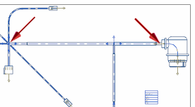
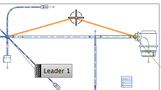
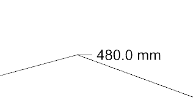

Now you need to place a Path Length label between two specific points on the harness.

From the Type list, select Points on Curves.
In the Select First End Point group, select End Point from the drop-down menu.
Select the left most point shown in the illustration above.
In the Select Second End Point group, select End Point from the drop-down menu.
Select the right most point.
Drag the label to a suitable location.

Click to place it.

The combined length of the selected segments is displayed.
Click Close.
Save and close your formboard drawing.